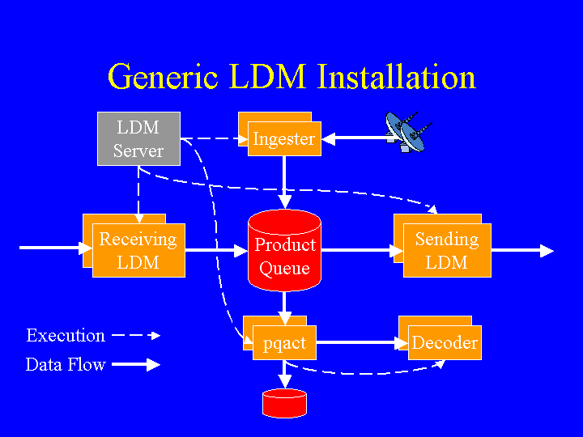

The following figure depicts the runtime structure of a generic LDM installation.

The figure shows the top-level ldmd process at the upper-left. At startup, this process starts the following child processes:
The top-level LDM process is also responsible for creating the sending LDM (alias upstream LDM) processes when requested by downstream LDM processes.
Both the ingesters and the downstream LDMs write data-products into the product-queue. Each ingester creates its data-products from an unspecified data-source. Each downstream LDM, on the other hand, receives its data-products from the upstream LDM to which it's connected.
Each upstream LDM reads data-products from the product-queue and writes them to the downstream LDM to which it's connected.
A pqact process writes data-products to disk or to LDM decoder processes that it starts and manages.